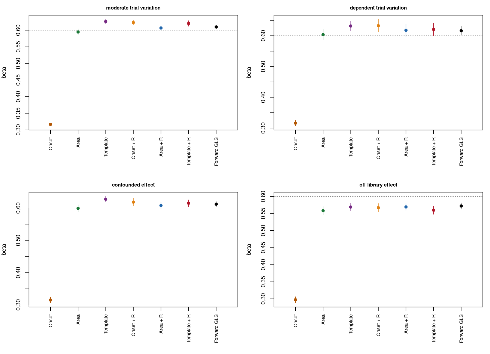
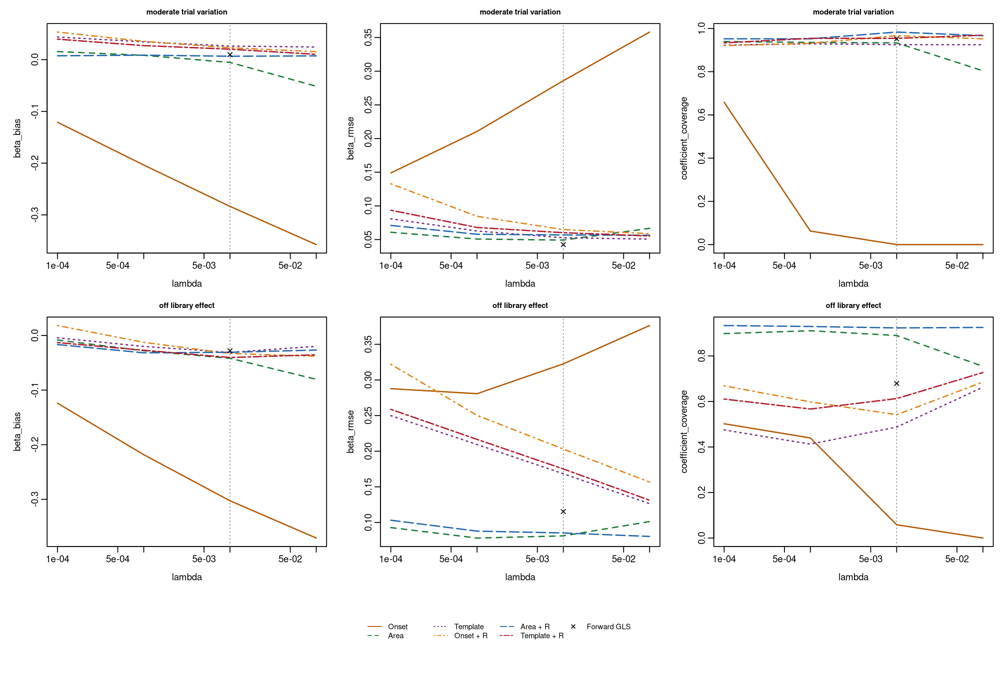
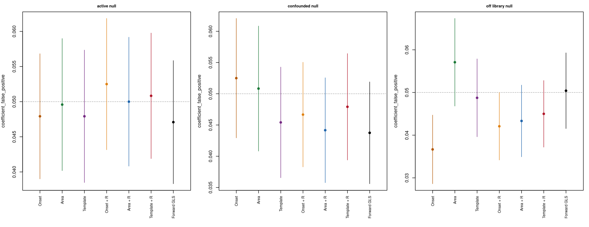

Recovering parametric coefficients after neural deconvolution
Source:COEFFICIENT_RECOVERY_VALIDATION.md
This study tests two follow-ups to PR #47: amplitude readouts that capture a temporally spread response, and regression that accounts for the frozen inverse’s attenuation and event mixing. The existing deconvolution algorithm, normalization defaults, alignment and truncation APIs are unchanged. Candidate methods live in validation scripts, pending assessment of accuracy and inference.
Results and implications
All 840 evaluation datasets / 32,760 analysis rows completed. Every target coefficient was identified in every run; no fallback or missing-coefficient selection affected these results. Both proposed approaches materially reduce attenuation of the nonzero RPE coefficient. The fixed window sum is the strongest simple candidate in these simulations; transformed regression makes its coefficient less sensitive to lambda, with a variance cost.
For moderate genuine trial variation at the prespecified lambda 0.01, with true beta 0.6:
| Learned-HRF analysis | Mean beta | Coefficient RMSE | Neural-beta interval coverage | Trial-amplitude r |
|---|---|---|---|---|
| Onset, ordinary | 0.316 | 0.286 | 0.0% | 0.912 |
| Window sum, ordinary | 0.595 | 0.0493 | 93.3% | 0.939 |
| Template, ordinary | 0.626 | 0.0527 | 92.5% | 0.936 |
| Onset, transformed | 0.623 | 0.0649 | 96.7% | 0.912 |
| Window sum, transformed | 0.607 | 0.0569 | 98.3% | 0.939 |
| Template, transformed | 0.620 | 0.0603 | 95.4% | 0.936 |
| Direct forward GLS benchmark | 0.610 | 0.0426 | 95.2% | Not estimated |
Window sum reduces coefficient RMSE by 0.237 relative to the onset baseline (paired Monte Carlo 95% interval: 0.232–0.242 improvement) and increases trial correlation by 0.0265 (0.0236–0.0294). Adding transformed regression to that window increases RMSE by 0.00764 (0.00335–0.0119) at this lambda, reflecting a variance cost. Its observed coverage of 98.3% is conservative, with Monte Carlo interval 97.3–99.4%; it should not be described as exact nominal calibration.

+ R denotes transformed-design regression. Error bars show Monte Carlo uncertainty in the mean coefficient across independent datasets, not the coefficient interval from one dataset. Mean coefficients alone can hide voxel-specific model bias; RMSE and coverage are essential companion outcomes.
The benefit of transformed regression becomes clearer across lambdas. In the moderate-variation case, ordinary window coefficients range from 0.549 to 0.616, while transformed window coefficients range from 0.607 to 0.609. The corresponding window-plus-transformed RMSE ranges from 0.0564 to 0.0711. This is stability of the coefficient analysis; the recovered trial amplitudes and their correlations remain identical for the two regressions at each lambda.

For window sum plus transformed regression, null rejection at lambda 0.01 is:
| Direct-effect null | Rejection | Monte Carlo 95% interval |
|---|---|---|
| Active task | 5.00% | 4.08–5.92% |
| Correlated task confounds | 4.42% | 3.58–5.26% |
| Confounds plus off-library HRFs | 4.33% | 3.49–5.17% |
These intervals are compatible with nominal 5% rejection in this experiment. They do not establish whole-brain or general-model calibration.

HRF mismatch remains a material limitation. For the off-library nonzero effect, window-plus-transformed beta is 0.569, RMSE 0.0853 and coverage 92.3% (Monte Carlo interval 89.7–94.9%). Supplying the true HRF/rho gives beta 0.607, RMSE 0.0816 and 95.0% coverage. Some alternatives are substantially worse: ordinary templates have RMSE 0.168 and 48.8% coverage; transformed templates have RMSE 0.175 and 61.3% coverage. Direct forward GLS with the learned, misspecified HRF covers only 67.9% despite its mean beta of 0.572.
Thus matching a template’s self-gain or passing a zero-effect null does not guarantee accurate nonzero coefficients. An inaccurate HRF can preserve zero while changing gain and inducing different errors across voxels. The full paired results and oracle references retain these failures.
The next public-facing candidate would be an explicit windowed amplitude summary with its definition and gain/leakage diagnostics recorded. The transformed coefficient analysis is useful as an optional model-based analysis and lambda-sensitivity check, rather than an unconditional improvement in RMSE. The template did not offer a clear advantage over the simpler window in these tests and was less robust to the off-library shapes.
These conclusions concern event-integrated amplitudes for the specified neural impulses. They do not show that every lag’s coefficient is corrected or that the underlying neural waveform becomes sharper. Durations, alternate schedules, masking and broader physiological mismatch need additional tests before changing defaults.
Questions and comparisons
The preceding study recovered trial-amplitude correlations above 0.9 while estimating an RPE coefficient near 0.315 for a true value of 0.6. It used a single onset sample from an inverse that smooths sharp neural impulses. These new comparisons ask whether more suitable readouts and an explicit forward mapping can recover the coefficient without sacrificing trial information or inflating false positives.
Every simulated dataset is analyzed with three readouts and two regressions:
| Readout | Definition | Uses RPE values? |
|---|---|---|
onset |
Linear interpolation at feedback onset, divided by ideal fractional-grid impulse gain | No |
area |
Sum of linearly interpolated neural samples at lags −1:3 s, divided by ideal fractional-grid impulse gain | No |
template |
Fixed −3:5 s matched response template, normalized to recover a unit isolated fitted-HRF event | No |
The windows were fixed before evaluation. No window, template shape, lambda or method is selected using the evaluation truth. Templates are computed from unit-event injections through the fitted forward model and frozen inverse. They do not fit the observed RPE pattern or true neural amplitudes. A template readout has unit self-gain under its assumed HRF; it can still collect other events and be wrong under HRF mismatch.
For each readout:
- Ordinary regression predicts recovered feedback amplitudes from an intercept, RPE, cue, response time, surprise and previous RPE, as in PR #47.
- Transformed-design regression predicts the same recovered amplitudes using the task/event design after applying the complete frozen forward, inverse, centering and readout operations. It jointly accounts for activity originating at cue, response and feedback events.
The reconstructed neural timeseries is identical across all readouts for a given fit and lambda. Ordinary and transformed regressions receive exactly the same trial-amplitude measurements for a given readout. Thus transformed regression cannot improve their neural or trial-amplitude correlations; it changes which underlying coefficient those measurements estimate.
The transformed design
Let B deposit all cue, response and feedback events on the acquisition grid, H convolve with the fitted unit-sum HRF, C demean observations, D denote the frozen native inverse, and S denote the chosen readout:
expected recovered amplitudes = S D C H B X beta
transformed design = S D C H B XThe event-amplitude model X has ten columns: cue mean and cue modulation; response mean and response-time modulation; and feedback mean, RPE, cue, response time, surprise and previous-RPE modulation. RPE is used at feedback only. This model spans the generating mean effects, including the correlated confounds. The unknown realized neural trial deviations remain residual variation; their true values are not supplied to the regression.
Each run’s RPE coefficient is estimated by projecting the transformed RPE column away from the transformed nuisance columns and regressing onto its remaining component. This is contrast-specific ordinary least squares with an SVD basis for nuisance effects. Redundant nuisance columns are allowed; a target with insufficient residual information is marked unidentified. No fallback to the ordinary coefficient or a fixed multiplier is substituted.
Nuisance singular values use relative tolerance 1e-8. A contrast requires at least two observations beyond nuisance rank and residual target energy greater than 1e-10 * max(1, original target energy). Identification frequency, residual information fraction and nuisance rank are retained. All six run coefficients must be identified for a voxel to enter coefficient summaries; missingness is reported explicitly.
The calculation includes cross-trial and cross-condition contributions, rather than dividing by a mean diagonal gain. It does not invert the full event resolution matrix or attempt to recover every trial by undoing smoothing. Under fixed correct models, the transformed design represents expected linear attenuation and mixing. It cannot correct an inaccurate HRF, omitted task effects or unidentified predictors.
Forward-model benchmark
A small parametric forward GLS reference fits H B X beta plus an intercept directly to BOLD, using the same selected HRFs and estimated AR(1) correlation. Both observations and design are whitened, with the stationary first-row factor. The RPE coefficient is unpenalized.
This reference estimates coefficients; it does not generate independent trial amplitudes or a replacement neural reconstruction. Its amplitude-correlation and readout diagnostics are therefore missing, rather than filled using model-predicted RPE responses. It is included at the primary lambda label only for convenient paired comparisons; it has no inverse lambda parameter.
All three analyses use the same explicit signed HRF mass and voxel-gain convention as the simulations. Recovering coefficients in this convention does not identify absolute physiological neural gain from real BOLD.
Simulation design
The preceding independent continuous generator remains unchanged. Each dataset contains six independent runs, 240 observations per run at TR = 1 s, and 12 signed voxels in two supplied parcels. Cue, response and feedback events have fractional onsets and overlapping BOLD responses. Feedback amplitudes include a mean, a direct RPE effect, optional confound effects and genuine neural trial variation. Neural innovations and measurement noise are separate; neither is orthogonalized against the realized task design.
| Scenario | Direct RPE beta | Neural trial SD | Trial AR(1) | Correlated task confounds | HRF shape parameters |
|---|---|---|---|---|---|
no_trial_variation |
0.6 | 0 | 0 | No | 5, 7 |
moderate_trial_variation |
0.6 | 0.3 | 0 | No | 5, 7 |
large_trial_variation |
0.6 | 0.9 | 0 | No | 5, 7 |
dependent_trial_variation |
0.6 | 0.9 | 0.6 | No | 5, 7 |
active_null |
0 | 0.3 | 0 | No | 5, 7 |
confounded_null |
0 | 0.3 | 0 | Yes | 5, 7 |
confounded_effect |
0.6 | 0.3 | 0 | Yes | 5, 7 |
off_library_effect |
0.6 | 0.3 | 0 | Yes | 4.3, 8.3 |
off_library_null |
0 | 0.3 | 0 | Yes | 4.3, 8.3 |
The off-library extension changes only the generating HRFs while preserving the neural amplitudes, event schedule, noise and random draws. Continuous BOLD is evaluated from independent analytic gamma densities, not package convolution helpers. The fitted design remains on the acquisition grid, retaining a continuous/grid mismatch even when its sampled HRF is known.
Each of six non-null scenarios has 40 independent evaluation datasets; each of three null scenarios has 200. Total: 840 independent datasets, 5,040 runs and 32,760 dataset/method/lambda rows. Voxels, runs and individual trials are not counted as independent Monte Carlo replicates.
Development and evaluation use separate seed blocks, distinct from the prior study:
development = 20000000 + original_scenario_index * 10000 + replicate
evaluation = 22000000 + original_scenario_index * 10000 + replicateRNG settings are fixed to Mersenne-Twister / Inversion / Rejection. The final development experiment has three datasets per scenario. Before generating any evaluation data, the runner saves the complete scenario definitions, counts, method schedule, primary endpoints, windows, tolerances, source hashes, package version and RNG rules. Completed experiment directories cannot be overwritten.
Fits, references and outcomes
The learned analysis uses the PR #46 native estimator: free trial amplitudes, cross-run HRF selection, supplied parcels, spatial strength 0.02, canonical strength 0.01, calibrated evidence and pooled AR(1) correlation estimation. RPE values never enter HRF fitting. The inverse uses demeaned inputs, the second difference penalty, ridge floor 1e-8, no tail padding and no additional inverse nuisance projection.
The learned analysis is evaluated at lambdas 0.0001, 0.001, 0.01, 0.1, with 0.01 prespecified as primary. At the primary lambda, all methods also receive:
- An oracle HRF/AR(1) reference using true sampled HRFs and true rho on the same continuous noisy data.
- A matched noiseless reference using true HRFs/rho and discrete BOLD generated from the same event amplitudes on the inverse’s grid. Measurement noise is removed. This reference diagnoses correctness under the assumed mean model; comparison with continuous noisy results changes both sampling mismatch and measurement noise, rather than isolating either factor individually.
The forward GLS benchmark receives the same three source conditions. These references do not select methods or lambdas. Known rho means covariance shape under the package’s innovation-variance convention, without introducing a separate measurement-variance estimator or cross-voxel whitening.
Primary outcomes are coefficient bias/RMSE, interval coverage, null rejection and actual trial-amplitude correlation. Coefficients are divided by the signed generating voxel gain for summaries, so the target is 0.6 or zero. Amplitude RMSE compares centered trial amplitudes in generating gain units. Neural correlation compares the reconstructed and true series in the run interior, excluding 32 observations at each end.
Reported self-gain and leakage are conditional on the fitted source HRF. Self-gain is the diagonal of S D C H B for feedback events. Leakage sums absolute contributions from other feedback events or cue/response sources. The template’s self-gain of one is enforced by its construction; it does not establish accuracy under model mismatch.
As in PR #47, inference uses the mean of six run coefficients and a t interval with five degrees of freedom. Run coefficients can have different variances, and HRF fitting across runs can couple them. Coverage is therefore audited empirically, not assumed from the t formula. The transformed regression is OLS within a run; it does not claim to whiten the recovered-amplitude covariance. Matched noiseless cases with zero neural trial variation retain point-error metrics but omit interval/power metrics dominated by numerical roundoff.
Monte Carlo uncertainty uses independent datasets after averaging voxels within each dataset. Probability intervals use the same boundary handling as PR #47; paired differences use unbounded dataset-level intervals. All tests are per voxel, without whole-brain multiplicity claims.
Computational implementation
The native inverse operators are cached across identical HRF/rho/lambda strata. Observations and unit-event designs are applied together with block matrix multiplication, and a shared stratum’s templates and small regression contrasts are reused across its voxels. The new work adds no per-voxel nonlinear optimization or dense event-resolution inversion.
The evaluation runs in four disjoint scenario groups, with one BLAS/OpenMP thread per worker. This parallelization preserves dataset seeds and pairing. These are small-voxel simulation timings, rather than a new whole-brain benchmark of the unchanged package algorithms.
The four groups completed in 420.7, 419.7, 513.7 and 454.3 seconds, approximately 8.6 minutes of concurrent wall time, including all references and sensitivities.
Numerical verification
All 73 focused test cases / 1,047 assertions pass with no failures, errors, warnings or skips. New checks verify contrast-specific estimates against an independent regression, target identification with redundant or collinear nuisance columns, the complete generating event model, and isolation of the off-library HRF change from neural truth and noise.
Readout tests check fractional-grid unit gains and exact template self-gain. Matched noiseless tests recover the correct positive and zero RPE coefficients for signed voxels, with cue/response and feedback confounds present. Changing RPE labels leaves neural activity and all trial readouts unchanged, while the transformed coefficient changes with the predictor’s units. Native activity matches the public inverse, and the ordinary onset baseline reproduces the preceding study’s calculations.
Report checks verify pairing, Monte Carlo units, complete schedules, protected output directories, source hashes and seed provenance. Existing HRF/GLS, parametric-generator, linear/voxelwise deconvolution and native extraction tests remain in the focused suite. No unrelated full-package suite or participant-data validation is claimed.
Reproduce and inspect
Run from the repository root with the PR #46 native package installed:
export FMRI_VALIDATION_LIBRARY=/path/to/installed/library
export OPENBLAS_NUM_THREADS=1
export OMP_NUM_THREADS=1
Rscript --vanilla inst/validation/run_coefficient_recovery.R /tmp/cr-development development
Rscript --vanilla inst/validation/run_coefficient_recovery.R /tmp/cr-evaluation evaluation
Rscript --vanilla inst/validation/report_coefficient_recovery.R /tmp/cr-evaluation inst/validation/coefficient_resultsThe optional third/fourth arguments override non-null/null replicate counts; the fifth selects comma-separated scenarios. Disjoint subsets may run in separate directories under a common parent. The report verifies source hashes, compatible frozen protocols, disjoint scenarios, exact method/lambda/dataset coverage, and seed provenance before combining results. It rejects incomplete or duplicated runs.
inst/validation/coefficient_results/ contains:
-
primary.csvandprimary_intervals.csv: all primary-lambda means and dataset-level Monte Carlo intervals. -
paired_primary.csv: first-minus-second paired differences for readouts, regression changes, the combined approach, and benchmarks. -
summary.csv.gzandpaired.csv.gz: every recorded outcome and lambda. -
replicate_metrics.rds: all 32,760 paired independent-dataset rows. -
fit_diagnostics.csv,settings.rds,provenance.txt,checksums.md5: generating seeds, HRF errors, frozen protocols and artifact provenance. - Figures showing coefficients, null calibration and regularization sensitivity.
x <- read.csv(gzfile("inst/validation/coefficient_results/summary.csv.gz"))
subset(x, lambda == .01 & metric == "coefficient_coverage")These experiments test the two proposed analysis changes. They do not establish a new package default, automatic lambda selection, calibration for nonlinear deconvolution algorithms, or recovery under omitted neural duration/nonlinear hemodynamics. The complete results should guide any subsequent public API.